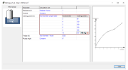
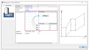

Calculation rules and their meaning
|
Calculation rule |
Meaning |
|---|---|
|
Feedrate * factor |
Define the axial feedrate, for example, based on the regular feedrate using a factor. The feedrate of the individual tool is always taken into account. |
|
Constant |
Use Constant to set a specific parameter to a constant value for all tools in a tool series. The value applies to all tools. |
|
Tool diameter sample table |
Use the Tool diameter sample table to define specific values for individual diameters. The value range between two examples is interpolated linearly. |
ImportantOnly the range between the smallest and largest diameter is defined! |
|
|

|
|
|
Tool diameter and corner radius sample table |
Use the Tool diameter and corner radius sample table to define specific values for individual diameter/corner radius combinations. The value range between the minimum and maximum values is interpolated. |
ImportantOnly the range between the smallest and largest values is defined! |
|
|

|
|
|
Tool diameter and pitch sample table |
Only available in the Tapping type of cut. Use the Tool diameter and pitch sample table to define specific values for individual diameter/pitch combinations. The value range between the minimum and maximum values is interpolated. |
|
Tool diameter * factor |
Based on the tool diameter, use a factor to define the value for the F/edge parameter, for example. The diameter of the individual tool is taken into account. |
|
Cutting length * factor |
Based on the cutting length of the tool, use a factor to define the value for the Infeed length max parameter, for example. The cutting length of the individual tool is taken into account. |
|
Standard material removal rate * factor |
The calculation rule is only available for the Standard roughing type of cut. The F/edge for full cuts is derived on the basis of the material removal rate during the standard roughing cut. The feedrate can also be reduced using a factor. |
|
Standard adjusted speed formula |
The calculation rule is only available for the Trochoidal roughing type of cut. Due to the reduced lateral infeed during trochoidal roughing, the tool life increases. The cutting speed is increased accordingly to such an extent that the tool life is maintained in relation to the tool’s reference technology. |
ImportantThe Cutting speed formula calculation rule allows tool manufacturers to use their own formulas to adjust the cutting speed. |
|
|
Standard chip thinning formula |
Use to keep the chip section constant depending on the lateral infeed (Ae). |
ImportantThe Feedrate per edge formula calculation rule allows tool manufacturers to use their own formulas to adjust the mean chip section. |
|
|
Stepover formula |
Use to calculate the Constant stepdown, the Constant stepover, or the 3D stepover based on the Scallop height parameter. |